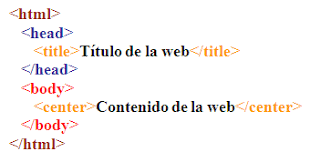
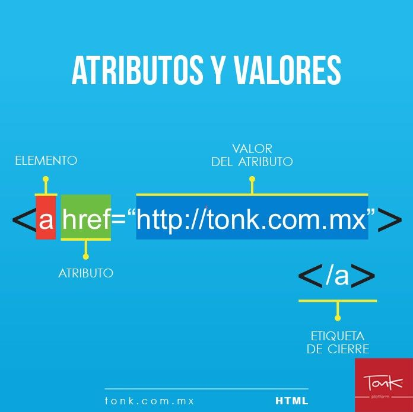

HTML es un markup language, lo que significa que está escrito con códigos que puede leer una persona sin que sea necesario compilarlo primero. En otras palabras, el texto en una página web está «marcado»
con estos códigos para dar instrucciones
al navegador web sobre cómo mostrar el texto. Estas etiquetas de marcado son las propias etiquetas HTML.
La mayoría de páginas web tienen varias páginas HTML diferentes. Por ejemplo, una página de inicio, otra de producto, otra de contacto, etc. Cada una de estas tiene HTML separados.
Los documentos HTML son archivos que acaban con .html o .htm.
Un navegador lee el archivo y muestra su contenido para los internautas puedan verlo.
Hay una serie de etiquetas que son las más usadas para crear cualquier documento HTML, a continuación las explicamos: body para el contenido
head para información sobre el documento
div división dentro del contenido
a para enlaces
strong para poner el texto en negrita
br para saltos de línea
H1…H6 para títulos dentro del contenido
img para añadir imágenes al documento
ol para listas ordenadas,
ul para listas desordenadas,
li para elementos dentro
de la lista
p para parágrafos
span para estilos de una parte del texto

Los elementos en HTML tienen atributos; estos son valores adicionales que configuran los elementos o ajustan su comportamiento de diversas formas para cumplir los criterios de los usuarios.
